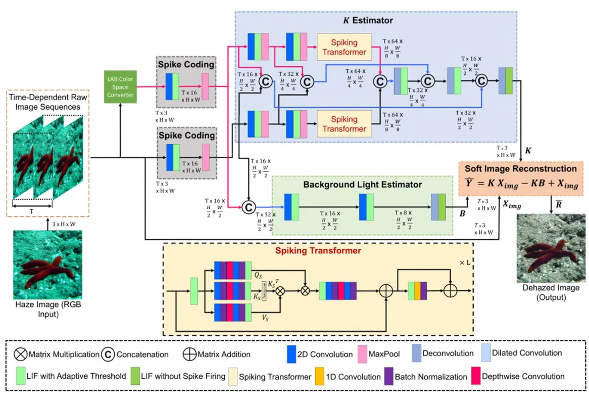

snnTrans-DHZ
A spiking transformer that estimates background light and restores underwater images from RGB and LAB inputs.
Neuromorphic Computing and Engineering · 2026
Method
snnTrans-DHZ uses adaptive-threshold spiking neurons and processes RGB and LAB sequences jointly. It estimates image-formation terms and background light, then reconstructs a dehazed image. The published model has 0.57 million parameters.
Evaluation
Table 3 compares both models trained and tested on UIEB and EUVP. Inference energy is analytically estimated.
| Dataset | Model | PSNR (dB) | SSIM | Est. energy (J) |
|---|---|---|---|---|
| UIEB | snnTrans-DHZ | 21.6773 | 0.8795 | 0.0151 |
| UIEB | UIE-SNN | 17.7801 | 0.7454 | 0.1327 |
| EUVP | snnTrans-DHZ | 23.4562 | 0.8439 | 0.0159 |
| EUVP | UIE-SNN | 23.1725 | 0.7890 | 0.0732 |
Figures



Publication and code
First and corresponding author. Spiking transformer with learnable threshold mechanism for underwater image dehazing to aid vision-based navigation. Source code on GitHub.